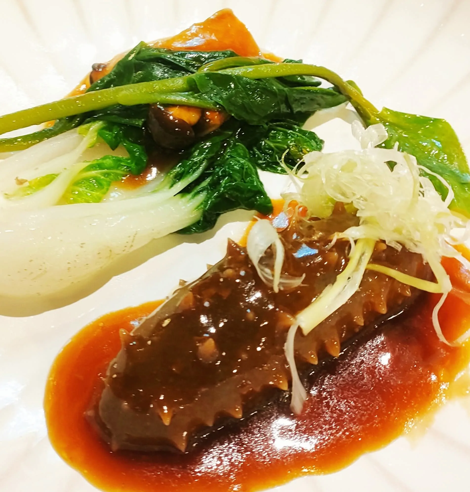

好吃的料理，往往不是某一個味道特別強，而是各個元素彼此平衡。吃完一口之後，不會只記得鹹或膩，而是覺得完整、還想再吃第二口。
最後更新：2026 年 10 月 11 日
基本的味覺包含甜、酸、苦、鹹與鮮。一道菜若只有鹹與鮮，容易單調；加入一點酸，可以解膩並提升清爽感；少量的苦味則帶來成熟的層次。調整時，多半是補上缺少的那一味，而不是把已經強的味道再加強。
同一道菜裡若全是軟的食材，吃起來會缺乏變化。在綿密的醬底上加一點酥脆的堅果或脆片，就能立刻增加層次。口感的對比，是讓人吃到最後一口仍有新鮮感的原因之一。
熱與冷的對比，例如熱的主食材搭配冷的醬汁或冰涼的甜點，能產生強烈的印象；但溫度不協調，也會讓味道失衡。宴席中熱菜是否維持在適合的溫度，與上菜節奏的安排密切相關。
一道菜好吃，不代表放進整場宴席也合適。前面的菜過於濃郁，後面的菜就容易被蓋過去。整場菜單的份量、濃淡與油脂分配，都需要整體考量，這也是為什麼菜單設計要以一整場為單位來思考，詳見私廚如何安排上菜順序。
在家烹調時，可以在調味的最後階段停下來問：這道菜缺的是酸、鹹、甜，還是口感？每次只調整一個方向，再試味，比一次改很多更容易學到平衡的感覺。
太膩可加入酸味（檸檬、醋）或搭配清爽配菜；太鹹則以不加鹽的主料或高湯稀釋，並避免再疊加其他鹹味。
少量鹹或酸能讓甜味不那麼單調，使整體更有層次，也比較不膩。
調味到最後階段停下來問：缺酸、鹹、甜，還是口感？每次只調整一個方向再試味。
提供活動日期、人數與場地，我們將提供最適合的私廚方案與報價建議。